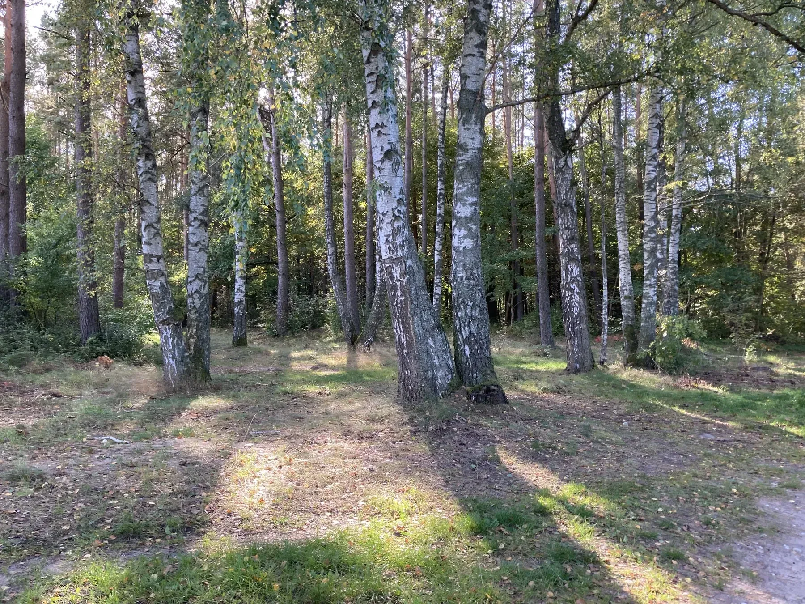
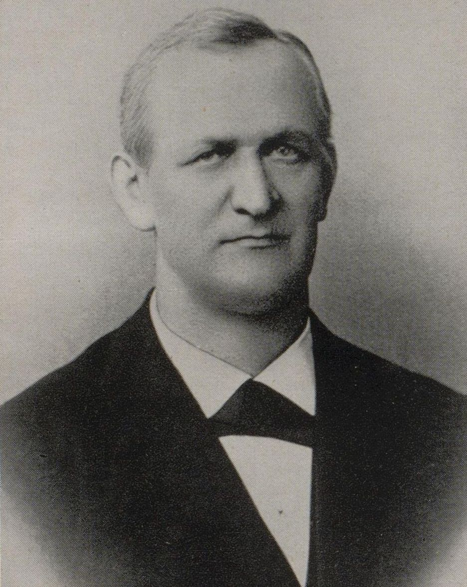

Na godzinę - bez celu
Wyjdź z Siemian w stronę lasu i po prostu wybierz drogę. Po kilku minutach znika letni gwar wsi.

Najlepsze krótkie wyjścia nie wymagają planowania. Jeśli masz więcej czasu, warto połączyć je z Urowcem, Jasnym albo fragmentem trasy Solniki.
Do planowania własnych tras
Mapa turystyczna Nadleśnictwa Susz
Jeśli chcesz samodzielnie układać spacery i wycieczki po Lasach Iławskich, przydaje się szczegółowa mapa turystyczna Nadleśnictwa Susz. To wygodny punkt odniesienia do planowania leśnych wariantów wokół Siemian i dalszych wyjść w teren.
Otwórz mapę turystyczną PDF ↗Mapa Nadleśnictwa Susz · PDF · około 22 MBSolniki - 14 km, które mają fabułę
To nie tylko leśna pętla. Trasa prowadzi przez miejsca związane z dawną osadą, hutą szkła, tartakiem, leśnictwem i rezerwatami. Dzięki tablicom można czytać krajobraz warstwa po warstwie.
Solniki: pełna historia i mapa trasy →Smolarnia, Christian Korn, huta szkła, tartak, dawna szkoła, cmentarz i 11 przystanków ścieżki.Rowerem: od krótkiej pętli po cały Jeziorak
Wokół jeziora można ułożyć zarówno spokojne kilkunastokilometrowe wyjścia, jak i pełną wyprawę dookoła Jezioraka. Zebraliśmy osobno najlepszy opis trasy, cztery propozycje z Komoot i gotowy plik GPX.
Rowerem wokół Jezioraka →LosWiaheros, Komoot, GPX i praktyczne warianty.Krótszy szlak Toeppena - 10 km historii nad Jeziorakiem
To jedna z tych tras, na których las jest tylko początkiem opowieści. Idziesz lub jedziesz wzdłuż Jezioraka, a po drodze mijasz kurhany, ślady dawnej smolarni, ruiny leśniczówki, stary cmentarz i miejsca, które ponad sto lat temu interesowały jednego z najważniejszych badaczy dawnych Prus.

Dlaczego szlak nosi jego imię?
Toeppen poświęcał dużo uwagi prahistorii Prus. Park Krajobrazowy podkreśla, że dzięki jego badaniom znamy historię kurhanów plemion z okolic Sarnówka, zamieszkujących te tereny we wczesnej epoce żelaza. Symbolicznym punktem trasy pozostaje miejsce po Jesionie Toeppena - pomnikowe drzewo runęło w 2023 r.
Jak biegnie trasa?
Szlak zaczyna się przy zjeździe z drogi Iława - Siemiany w kierunku Sarnówka i prowadzi wzdłuż brzegu Jezioraka aż nad Zatokę Widłągi. Ma 10 km i jest przeznaczony zarówno dla pieszych, jak i rowerzystów. W terenie prowadzą biało-brązowe drogowskazy.
Orientacja przed wyjściem
Mapa szlaku Maxa Toeppena
Szlak zaczyna się przy zjeździe z drogi Iława–Siemiany w stronę Sarnówka i kończy nad Zatoką Widłągi. Na mapie zaznaczamy oba potwierdzone punkty krańcowe oraz orientacyjny kierunek przejścia. W terenie należy trzymać się biało-brązowych drogowskazów - linia nie jest śladem GPS.
To dobry wybór na kilka godzin, jeśli chcesz czegoś więcej niż zwykłego spaceru. Nie trzeba znać historii regionu przed wyjściem - tablice na trasie prowadzą przez nią krok po kroku.
To nie są naturalne pagórki, lecz dawne mogiły ziemne. Zespół Parków Krajobrazowych wiąże je z ludnością zamieszkującą okolice Sarnówka we wczesnej epoce żelaza i podkreśla, że ważną część wiedzy o tych stanowiskach zawdzięczamy badaniom Maxa Toeppena. Na trasie warto patrzeć na nie jak na ślady krajobrazu kulturowego starszego o wiele stuleci niż okoliczne wsie.
Gra terenowa bez pośpiechu
Leśne bingo: znajdź wszystkie tropy
W materiałach Parku pojawia się więcej wyjątkowych drzew i alej niż sam Jesion Toeppena. Zebraliśmy siedem przyrodniczych punktów w jedną listę poszukiwacza. Nie wszystkie stoją tuż przy znakowanym szlaku, a niektóre są dziś już śladem dawnego krajobrazu - właśnie dlatego warto szukać uważnie.
To zabawa krajoznawcza, nie precyzyjna mapa dojścia. Część obiektów leży w lasach gospodarczych lub wrażliwych przyrodniczo. Nie schodź z udostępnionych dróg tam, gdzie zabraniają tego oznaczenia, nie dotykaj oznakowań i nie uszkadzaj drzew.
Najpierw popatrz. Potem idź.
Jeśli chcesz zobaczyć, dlaczego te lasy są warte całego dnia, dwa ogólnodostępne albumy Stanisława Blonkowskiego są świetnym wstępem. To dużo więcej niż galeria: krajobrazy, fauna, flora i historia Lasów Iławskich.
Zielony Skarbiec Ziemi Suskiej
Drugi obszerny album przyrodniczy poświęcony zielonemu zapleczu regionu.
Otwórz album PDF ↗„Zanocuj w lesie”
Jeśli zamiast wracać na taras masz ochotę spędzić noc w lesie, Lasy Państwowe prowadzą oficjalny program „Zanocuj w lesie”. Wyznaczone obszary mają własne regulaminy i zasady, więc przed wyjściem warto sprawdzić aktualną mapę i wymagania konkretnego nadleśnictwa.